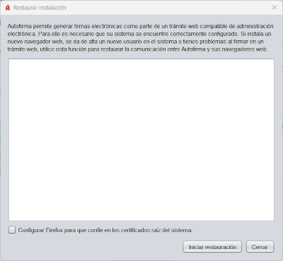

Desde este panel es posible restaurar la instalación de Autofirma para corregir problemas que afecten a la comunicación entre los navegadores web y la aplicación. Los casos más comunes son: se ha instalado un nuevo navegador web después de la instalación de Autofirma, se han creado más usuarios en el equipo o más perfiles de usuario para un navegador, se ha reseteado el perfil de un usuario, etc.

Al activar esta opción (sólo disponible en Windows y macOS) se permite que el proceso de restauración configure Firefox de tal forma que el navegador confiará en los certificados instalados en el almacén de certificados raíz del sistema (Autoridades de confianza). De esta forma Autofirma seguirá funcionando en este navegador aunque se configuren nuevos perfiles, se limpie el perfil o si se elimina el certificado de confianza del almacén del navegador. Si se deja esta casilla desactivada se eliminará esta configuración en caso de que ya estuviese establecida.
Al pulsar el botón "Iniciar restauración" se iniciará el proceso de restauración.
ADVERTENCIA PARA USUARIOS DE MICROSOFT WINDOWS: Si al ejecutar el proceso de instalación apareciese un mensaje indicando "La ejecución del código no puede continuar porque no se encontró VCRUNTIME140.dll. Este problema se puede solucionar reinstalando el programa", deberá instalar el entorno de ejecución redistribuible de Microsoft Visual C++ 2015 y volver a ejecutar la operación para poder completar la restauración.